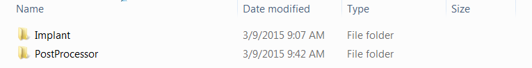
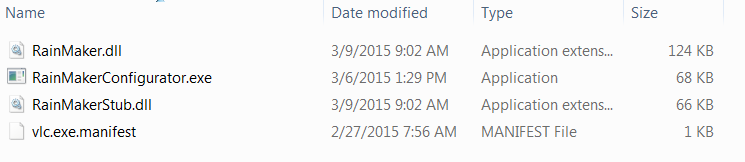
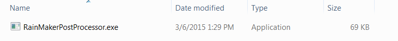
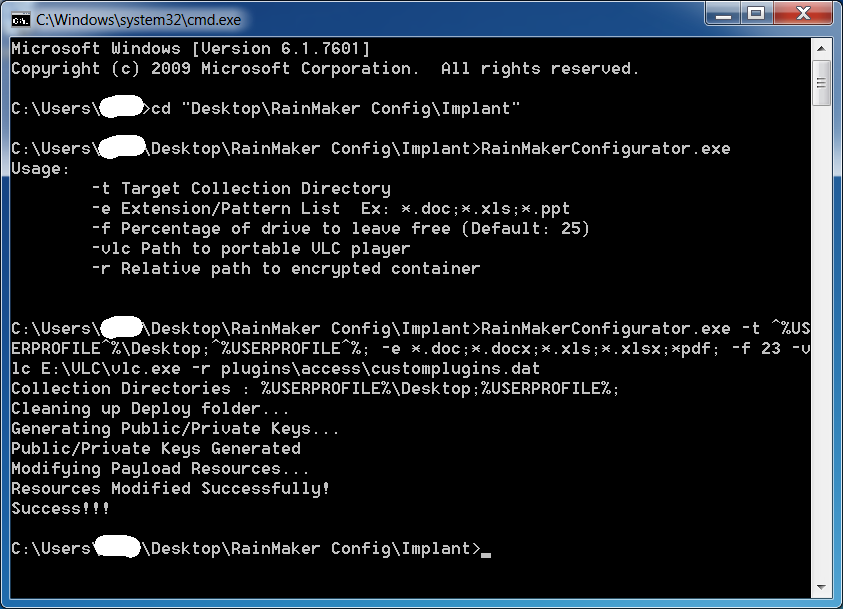
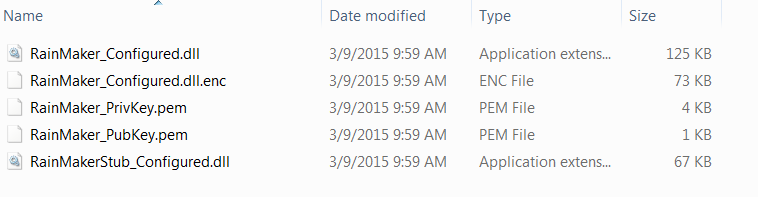
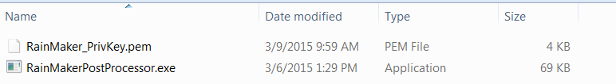
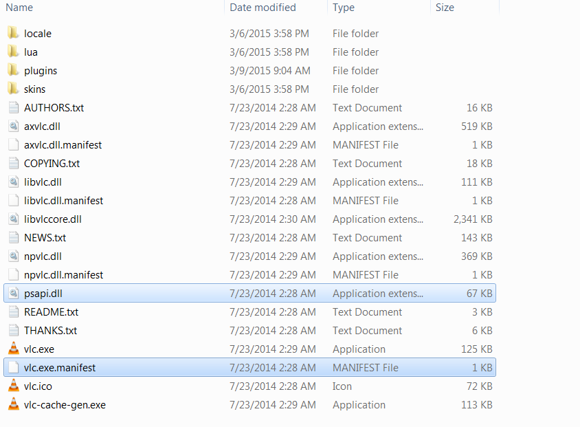
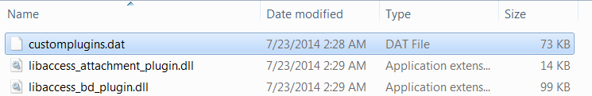
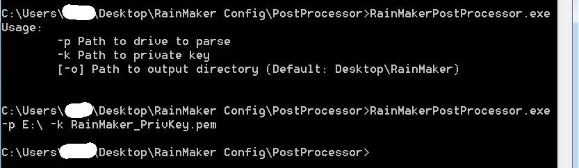

Vault7: CIA Hacking Tools Revealed
Navigation: » Latest version
Rain Maker v1.0 User Guide
(U) Engineering Development Group
(U) Rain Maker 1.0
User's Guide
Rev. A
9 March 2015
Classified By: 2392146
Derived From: COL S-06
Reason: 1.4 (c)
Declassify on: 20350629*(U) Change Log*
[Unclassified]
Doc |
Doc |
Rev |
Change Description |
Reference |
Authority/ |
|---|---|---|---|---|---|
New |
03/09/15 |
CJW |
New |
|
|
|
|
|
|
|
|
|
|
|
|
|
|
|
|
|
|
|
|
|
|
|
|
|
|
|
|
|
|
|
|
(U) Table of Contents
(U) Scope
(U) This document establishes the User Guide for Rain Maker v1.0.
(U) System Overview and Description
(S) Rain Maker v1.0 is a collection tool intended to be run from removable media. Version 1.0 specifically is designed for use with portable VLCMediaplayer Player (2.1.5). To trigger collection, the user must open up VLCMediaplayer player on the target machine from the removable media. The removable media can appear as either a fixed or removable drive but must be formatted NTFS. Upon opening VLCMediaplayer player, Rain Maker collects a standard survey of the machine (RoadRunner Survey) and a prioritized file collection. A survey will only be taken on any machine if the last survey of the machine is seven days old or older. The collected data is stored back to Alternate Data Streams off of the root of the volume. For example, if the removable media appears as volume E:\, the data is stored in E:\:$DataIdN. Configuration options allow the user to specify a prioritized list of directories from which to collect files (environment variables can be used), a list of extensions to collect, the percentage of drive space to be left free, and the drive to configure/tie the tool to. Upon configuring a piece of removable media, a public/private key pair is generated (the private key in generated in Implant\Deploy as well as in PostProcessor). The private key must/must be kept in order to decrypt the returned data. Also, upon configuring a drive, a "stub" is generated that ties the tool to the drive. The stub, once loaded, decrypts Rain Maker and executes it. This means that if the drive is reformatted or if the portable player is moved to another drive, the actual collection tool will not be decrypted and as a result Rain Maker will not run.
(U) Assumptions and Constraints
(S) We assume that the target places files of interest into the directories we are collecting from. We also assume that the files in the collection directories have the appropriate extensions. It is required that the VLCMediaplayer player be run from the configured removable media. It must run long enough to complete collection. The removable media must be NTFS. VLCMediaplayer player should be exited before unplugging the removable media (a VLCMediaplayer issue).
(U) Applicable Documents
(S) The following documents pertain to this tool. In the event of a conflict between the documents referenced below, the contents of this document will be considered binding.
- Rain Maker v1.0 User Guide.doc (S//NF)
- Rain Maker v1.0 TDR Slides.ppt (S//NF)
- User Guide.txt (U)
(U) System Description
(U) System Concepts and Capabilities
- (S) Rain Maker v1.0 does not maintain a presence on the target machine
- (S) Rain Maker v1.0 relies of VLCMediaplayer player for execution
- (S) Rain Maker v1.0 follows the NODNetwork Operations Division Persistence Specification
- (S) The Rain Maker stub is a DLLDynamic Link Library hijack of psapi.dll. The external manifest of VLCMediaplayer player is modified to force a Side-by-Side loading of psapi.dll (forcing a DLLDynamic Link Library hijack where there wasn't one). The stub DLLDynamic Link Library then uses the volume serial number of the drive it is running from to create an AESAdvanced Encryption Standard key. The key is then used to decrypt Rain Maker v1.0. Once decrypted, Rain Maker v1.0 is memory loaded.
- (S) Upon startup, Rain Maker Stub sets a global mutex allowing only one instance to run at one time.
- (S) Rain Maker will conduct a survey of the machine it is running on if a survey has not been conducted or if the last survey is 7 days old or older.
- (S) A survey hash list is kept to keep track of last survey timestamps for machines that have been surveyed.
- (S) Rain Maker conducts a prioritized file collection (configurable).
- (S) Rain Maker collects files by matching patterns (configurable).
- (S) There is a hard-coded maximum file size of a 100MBs for file collection. This means no files over 100MBs will be collected.
- (S) A file collection hash file is kept. A file is collected if the file name, file size or file modified time differs from all previously collected files.
- (S) Rain Maker v1.0 stores collection in Alternate Data Streams off of the root of the volume it is executing from.
(U) Prerequisites
- (S) The target system must be running Windows XP, Vista, 7, 8, or 8.1.
- (S) The user of the target computer must execute VLCMediaplayer player from the configured drive.
(U) Operation
(U) Installation and Setup
(S) Configuration – Rain Maker Configurator
-
- Folder Structure
- Before trying to configure Rain Maker, first confirm that the Implant folder contains the four required files: RainMaker.dll, RainMakerStub.dll, RainMakerConfigurator.exe, vlc.exe.manifest. You will need to open a command prompt and navigate to this directory to configure Rain Maker using the RainMakerConfigurator.exe.
- Deploy Directory
- Upon executing the configurator a Deploy folder is generated (as a sub-folder of Implant). Depending upon the options you choose during configuration, up to 5 files will be placed in the Deploy folder. These 5 files include RainMaker_Configured.dll (the configured version generated for this deployment), RainMaker_Configured.dll.enc (the encrypted container containing RainMaker_Configured.dll), RainMakerStub_Configured.dll (the configured stub for this deployment), RainMaker_PubKey.pem and RainMaker_PrivKey.pem (the public and private key generated for this deployment).
- Target Collection Directories (-t)
- A semi-colon delimited list of directories to collect files from. The collection is prioritized in the order they are provided. Environment variables may be supplied as an argument but you must escape all percent signs using a preceding carat (Ex: %USERPROFILE%\Desktop;%USERPROFILE%; - In this example files are collected from the Desktop folder and sub-folder before the user's directory). The configuration tool should print out your supplied target collection directories, if environment variables become expanded it means the percent signs were not escaped.
- Extension/Pattern List (-e)
- The extensions and or filename patterns to collect from the target directories. The file extensions are also a semi-colon delimited list. Example: .doc;.xls;*.ppt;
- Disk Free Space (-f)
- Percentage of the drive to leave free (0 – 100). If not supplied, the default is 25%. In the default case, this means that if the drive Rain Maker is executing from becomes over 75% full, Rain Maker no longer stores collect.
- Path To VLCMediaplayer (-vlc)
- To infect VLCMediaplayer player for a specific piece of removable media, the configurator needs the path to the VLCMediaplayer executable (vlc.exe) that resides on the removable media. Example: E:\vlc\vlc.exe
- Relative Path To Encrypted Rain Maker (-r)
- This is the relative path from the directory containing vlc.exe where the encrypted container for Rain Maker will reside. Note that these directories are not created by the configurator. Example: plugins\access\customplugins.dat
- Argument Requirements
- When configuring Rain Maker v1.0 you may supply all 5 arguments to generate the configured payloads and infect the media (Recommended). If mistakes are made during configuration, reinfection (running the configuration tool again) will securely delete prior configurations from the target media and replace them with the new configured payloads. However, if you have executed Rain Maker v1.0, you should reformat the drive before running the configuration tool again. The configuration tool also allows you to run the configuration in stages (more for future use – not recommended). For example, supplying only the target collection list, extension/pattern list, and the relative path to the encrypted container will generate all of the configured payloads without infecting the media. Supplying the path to the VLCMediaplayer player and the relative path to the encrypted container will infect the media with the previously generated payloads. NOTE: Always save the private key for your deployment – needed for decryption of data. The private key is stored in both the Deploy and PostProcessor folders.
- Folder Structure
(U) Post Processing
(U) Post Processor Arguments
-
- (S) The post processor for Rain Maker v1.0 is a high-side (classified) utility.
- (S) –p: the path to the drive containing collection. Example: -p E:\
- (S) –k: the path to the private key for the deployment (required for decryption). Example: -k RainMaker_PrivKey.pem
- (S) –o (optional): Path to where output files should be placed. If not supplied, results are placed on the user's Desktop in a folder named RainMaker.
- (S) Results are organized by collection date. If a survey was conducted it will appear in the root of the collection date folder. The file collection directory structure is reconstructed.
(U) Configuration Example
(U) Tool Configuration
- (S) Folder structure before executing configuration (all files generated by the configuration tool are replaced on each execution of the configuration tool):



- (S) Collect files from %USERPROFILE%\Desktop first and then collect from %USERPROFILE%.
-
-
- (S) Collect Word Documents, Excel Documents and PDFs.
- (S) Have a minimum of 23% free space on the drive
- (S) Path to the VLCMediaplayer player is E:\VLC\vlc.exe
- (S) Relative path to the encrypted container is plugins\access\customplugins.dat
-
-

-
-
-
- (S) Folder structures after configuration:
-
-


Changed Files:


(U)Post Processing
- (S) Supply drive containing collection: E:\
- (S) Supply private key for decryption: RainMaker_PrivKey.pem
- (S) Default output directory
